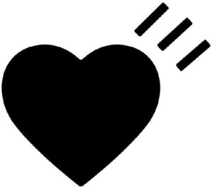

Trade Mark Journal No.2025/037 12 September 2025
WO0000001849018 (3,9,11,14,16,18,20,21,24,25,27,28,29,30,32,33,41,42)
Office of origin: Japan
Date of International Registration:18 December 2024
Date of designation in the UK:
18 December 2024

International priority date claimed: 28 November 2024
(Japan)
- Class 3
- Toothpaste; dentifrices; toilet soap; bath soap; deodorant soap; hand cleaning preparations; shampoos; cosmetic preparations; body deodorants, perfumery; fragrances for personal use; breath freshening sprays; natural perfumery; incense; false nails; false eyelashes; aromatics [essential oils]; essential oils for personal use.
- Class 9
- Ear plugs for divers; safety helmets; downloadable game programs for arcade video game machines; game programs for arcade video game machines, recorded; photographic machines and apparatus; bags specially adapted for cameras and photographic equipment; cinematographic machines and apparatus; optical machines and apparatus; loudspeakers; earphones; earphone cases; headphones; personal digital assistants; smartphones; covers for smartphones; cases for smartphones; monopods used to take photographs by positioning a smartphone or camera beyond the normal range of the arm; computers; computer peripheral devices; downloadable computer software for use in customer relationship management (CRM); downloadable computer software for creating and editing music and sounds; downloadable computer screen saver software; downloadable computer software for organizing and viewing digital images and photographs; computer mouse; sleeves for laptops; dust masks; gas masks; welding masks; fireproof garments; gloves for protection against accidents; spectacles; sunglasses; cases for spectacles and sunglasses; downloadable game programs for home video game machines; game programs for home video game machines, recorded; electronic circuits and CD-ROMs recorded with programs for hand-held games with liquid crystal displays; protective helmets for sports; sports whistles; weight belts for scuba diving; air tanks for scuba diving; snorkels; regulators for scuba diving; metronomes; electronic circuits and CD-ROMs recorded with automatic performance programs for electronic musical instruments; electric and electronic effects units for musical instruments; phonograph records; downloadable music files; downloadable image files containing artwork, text, audio, video, games and Internet Web links relating to fashion and cultural activities; recorded video discs and video tapes featuring fashion and cultural activities; downloadable electronic publications in the nature of books, magazines, brochures in the field of fashion and cultural activities; exposed cinematographic films; exposed slide films; slide film mounts; downloadable digital image files containing virtual characters on the Internet and characters via the computer network; downloadable digital image files containing clothing for virtual characters on the Internet and for characters via the computer network; downloadable computer software for an online marketplace for buyers and sellers of sound and video files authenticated by non-fungible tokens [NFTs]; downloadable digital collectibles being image files authenticated by non-fungible tokens [NFTs] using blockchain technology; downloadable virtual clothing; downloadable virtual footwear.
- Class 11
- Electric lamps; LED lighting apparatus; electric coffee machines for household purposes; electric cooking stoves for household purposes; electric cooking pots for household purposes; household air cleaners; hot plates for household purposes; electric space cooling apparatus for household purposes; electric radiant heaters for household purposes; electric footwarmers for personal use; electric bread toasters for household purposes; electric blankets for household purposes; gas lamps; lamps; oil lamps; personal cooling packs, not for medical purposes; gas fires; coal stoves [space heaters for household use]; oil stoves [space heaters for household use]; water closets; towel steamers [for hairdressing purposes]; hair drying machines for beauty salon use; hair steamers for beauty salon use; shampoo basins for barbers' shop use; gas-fired water heaters; non-electric cooking heaters for household purposes; kitchen sinks incorporating integrated worktops for household purposes; kitchen sinks for household purposes; water purifiers for household use; freestanding paper lanterns; portable paper lanterns (chochin); lamp chimneys; warming pans for bed, non-electric; pocket warmers; seats for use with Japanese style toilet bowls; toilet stool units with a washing water squirter; toilet bowls; bathtubs; shower tubs; electric pocket warmers for warming hands.
- Class 14
- Precious metals; semi-processed precious stones and their imitations; key rings; charms for key rings; jewel cases of precious metal; jewelry boxes of leather; charms for jewelry; jewelry; paste jewelry; ornaments of precious metal in the nature of jewelry; pin badge; jewelry brooches; necklaces; earrings; bracelets; jewelry rings; tie pins; tie clips; cuff links; shoe jewelry; jewelry chains; medals; trophies [prize cups] of precious metal; commemorative shields of precious metal; shoe ornaments of precious metal; clocks; watches; watchstraps; precious stones; synthetic precious stones.
- Class 16
- Pastes and other adhesives for stationery or household purposes; sealing wax; printers' reglets; printing type; electric staplers for offices; industrial packaging containers of paper; plastic bags for packing; food wrapping plastic film for household use; paper garbage bags; garbage bags of plastic; paper patterns; tailors' chalk; banners of paper; flags of paper; hygienic hand towels of paper; towels of paper; table napkins of paper; hand towels of paper; handkerchiefs of paper; paper; cardboard; stationery; printed notebooks; writing implements; ink for writing instruments; seals, stationery; paper knives [letter openers]; bookmarkers; printed matter; printed books; printed magazines; printed trading cards, other than for games; paintings and calligraphic works; photographic prints.
- Class 18
- Leathercloth; leather; fur; industrial packaging containers of leather; clothing for pets; bags; handbags; shoulder bags; tote bags; suitcases; Boston bags; travelling bags; briefcases; rucksacks; waist pouches; key pouches; pouches of leather; wallets; key cases; coin purses; card wallets; business card cases; commutation ticket holders; pouches for holding make-up, keys and other personal items; vanity cases, not fitted; umbrellas; walking sticks; canes; metal parts of canes and walking sticks; walking cane handles; walking stick handles; saddlery.
- Class 20
- Locks, non-electric, not of metal; cushions; Japanese floor cushions, namely, zabuton; pillows; mattresses; industrial packaging containers of wood; industrial packaging containers of plastics; nameplates and door nameplates, not of metal; hand-held flagpoles, not of metal; hand-held flat fans; hand-held folding fans; dog kennels; nesting boxes for small birds; beds for household pets; letter boxes [not of metal or masonry]; hat hooks, not of metal; water tanks for household purposes, not of metal or masonry; tool boxes, not of metal, empty; boxes, not of metal, for dispensing paper towels; hand-held supermarket shopping baskets, not of metal; towel dispensers, not of metal; furniture; indoor blinds; blinds of reed, rattan or bamboo, namely, sudare; bead curtains for decoration; window shades; wind chimes; oriental single panel standing partition, namely, tsuitate; oriental folding partition screens, namely, byoubu; benches; advertising balloons; upright signboards of wood; upright signboards of plastics; prize cups of wood, wax, plaster or plastic; commemorative shields of wood, wax, plaster or plastic; personal compact mirrors; bags for personal compact mirrors; shoe dowels, not of metal; shoe pegs, not of metal; hobnails, not of metal; cradles; infant walkers; mannequins; costume display stands; picture frames; plaster sculptures; plastic sculptures; wooden sculptures; photograph frames.
- Class 21
- Dental floss; unworked or semi-worked glass, not for building; cosmetic utensils; combs; comb cases; powder puffs; powder compacts sold empty; cosmetic brushes; hairbrushes; fitted vanity cases; toothbrushes, non-electric; gloves for household purposes; industrial packaging containers of glass; industrial packaging containers of porcelain; plastic bottles for household purposes; plastic bottles; cooking pots, non-electric; frying pans, non-electric; kettles, non-electric; dishware; beverage glassware; drinking cups; drinking glasses; mugs; water bottles sold empty; vacuum bottles; ice pails; chopsticks; drinking straws; kitchen mitts; tea cosies; feeding vessels for pets; brushes for pets; cleaning tools and washing utensils; cleaning cloth; cleaning pads; tongue cleaning brushes; brooms; dustbins; ironing boards; tailors' sprayers; ironing boards (kotedai); Hera-dai [fabric marking boards]; candle extinguishers; candle holders not of precious metal; flower pots; hydroponic plant pots for home gardening; watering cans; clothes brushes; coin banks; cold packs for chilling food and beverages; soap dispensing bottles, sold empty; tanks [indoor aquaria] and their fittings; toilet paper holders; flower vases; flower bowls; upright signboards of glass; incense burners; prize cups of porcelain, ceramic, earthenware, terra-cotta or glass; commemorative shields of porcelain, ceramic, earthenware, terra-cotta or glass; shoe brushes; shoe horns; shoe shine cloths; shoe shine sponges; shoe trees; portable cooking kits for outdoor use.
- Class 24
- Woven fabrics; knitted fabrics; felt and non-woven textile fabrics; oil cloths; gummed waterproof cloth; rubberized cloths; filtering materials of textile; towels of textile; handkerchiefs of textiles; lap blankets; bed blankets; blankets of textile; picnic blankets; covers for blankets; bath linen, except clothing; bed sheets; Futon quilts; futon quilt covers; futon ticks, namely, unstuffed futon covers not of paper; pillow covers; table napkins of textile; table linen, not of paper; dish towels for drying; shower curtains; banners of textile; flags of textile; fitted toilet seat covers of textile; unfitted seat covers of textile; wall hangings of textile; curtains of textile; curtains of plastic; textile tablecloths; draperies, thick drop curtains; billiard cloth; sleeping bags; woven textile goods for personal use, namely, elastic woven fabrics, mesh-woven fabrics, narrow woven fabrics.
- Class 25
- Clothing; jackets; coats; jeans; down jackets; one-piece suits; blouses; skirts; dresses; vests; scarfs; bolero; uniforms; jumpers; pants; shirts; T-shirts; polo shirts; raincoats; suits; sweaters; pullovers; cardigans; nightgowns; pajamas; nightwear; swimsuits; bathing caps; underclothing; tights; camisoles; aprons [clothing]; bandanas; stoles; shawls; mufflers [clothing]; ear muffs; socks; leg warmers; slippers; neckties; garters; sock suspenders; suspenders for clothing; waistbands; belts for clothing; hats; caps being headwear; visors being headwear; gloves [clothing]; footwear; sneakers; protective members for footwear; masquerade costumes; special footwear for sports; clothes for sports, other than clothes for water sports.
- Class 27
- Bath mats; tatami mats; floor mats; rugs; carpets; wall hangings, not of textile; artificial turf; gymnastic mats; yoga mats; wallpaper; carpets for automobiles.
- Class 28
- Amusement machines and apparatus, namely, coin-operated games for use in amusement parks; arcade video game machines; toys for domestic pets; toys; toy action figures; toy cameras; toy robots; toy vehicles; toy watches; toy models; toy masks; electric action toys; dolls; game cards; Go games; Japanese chess, namely, shogi games; Japanese playing cards, namely, utagaruta; dice; Japanese dice games, namely, sugoroku; cups for dice; Chinese checkers games; chess games; checkers games; conjuring apparatus; dominoes; playing cards; Japanese playing cards, namely, hanafuda; mah-jong; game machines and apparatus; home video game machines; billiard equipment; sports equipment; balls for sports; golf club covers; grip tapes for golf clubs; golf bags, with or without wheels; golf gloves; fishing tackle; butterfly nets.
- Class 29
- Oat milk; milk products; milk; cheese; butter; lactic acid drinks; milk beverages, milk predominating; nut and seed-based snack bars; organic nut and seed-based snack bars; berry-based fool; snack mixes consisting of dehydrated fruit and processed nuts; candied fruit snacks; snack mixes consisting of processed fruits, processed nuts or raisins; dried fruit-based snacks; fruit-based snack food; stir-fried chestnuts with sugar; crystallized fruits; bean-based snack foods; vegetable-based snack foods; fish-based snack food; meat-based snack foods; snack mixes consisting of wasabi peas, processed nuts, dehydrated fruit or raisins; potato chips; edible oils and fats; meat; eggs; seafood, not live; frozen vegetables; frozen fruits; charcuterie; processed seafood; processed vegetables and fruits; compotes; jams; coleslaw; coconut powder; bottled sliced fruits; fried potatoes; peanut butter; fried tofu pieces (abura-age); freeze-dried tofu pieces (kohri-dofu); jelly made from devils' tongue root (konnyaku); soya milk; tofu; fermented soybeans (natto); processed eggs; pre-cooked curry stew; stews; soup mixes; dried flakes of laver for sprinkling on rice in hot water (ochazuke-nori); seasoned powder for sprinkling on rice (furi-kake); pulses, preserved.
- Class 30
- Pre-packed lunches consisting primarily of rice, and also including pre-cooked curry stew; tea; coffee; cocoa; water ice; pastries; frozen confectionery; chocolate confectionery; jelly confectionery; sweets other than meat-based, fish-based, fruit-based, vegetable-based, bean-based or nut-based; puffed corn snacks; bread; sandwiches; steamed buns stuffed with minced meat [Chuka-manjuh]; hamburger sandwiches; pizzas; hot dog sandwiches; meat pies; food seasoning; curry powder (spice); curry spice mixes; curry pastes; ice cream mixes; sherbet mixes; unroasted coffee beans; processed grains; chocolate spread; Chinese stuffed dumplings (gyoza, cooked); Chinese steamed dumplings (shumai, cooked); sushi; fried balls of batter mix with small pieces of octopus [takoyaki]; pre-packaged lunches consisting primarily of rice, and also including meat, fish or vegetables; ravioli; cookie mixes; pancake mixes; pastry mixes; pasta sauce.
- Class 32
- Beer; extracts of hops for making beer; non-alcoholic carbonated beverages; aerated water; non-alcoholic beer flavored beverages; carbonated soft drinks; soft drinks; soft drinks flavored with fruit; cola drinks; bottled water; mineral water [beverages]; flavored water; isotonic drinks; energy drinks; sports drinks; fruit juices; vegetable juices [beverages]; whey beverages.
- Class 33
- Sake; Japanese white liquor [Shochu]; Awamori [distilled rice spirits]; sake substitute; Japanese sweet rice-based mixed liquor [Shiro-zake]; Naoshi [Japanese liquor]; Japanese Shochu-based mixed liquor [Mirin]; spirits; gin; vodka; rum; whisky; brandy; liqueurs; cocktails; curacao; kirsch; alcoholic fruit beverages; wines; fortified wines; cooking wines; sparkling wines; cider; Japanese Shochu-based beverages [Chuhai]; flavored brewed alcoholic malt beverages, except beers; Chinese brewed liquor (Laojiou); Baijiu [Chinese distilled alcoholic beverages]; flavored tonic liquors; liquor flavored with Japanese plum extracts.
- Class 41
- Operating of lotteries; dubbing; teaching in the field of fashion and cultural activities; art instruction; dressmaking instruction; instruction relating to fashion design; instruction relating to graphic art design except typeface design; instruction relating to design of textiles; instruction relating to interior design; instruction relating to commercial art design except typeface design; arranging, conducting and organization of seminars relating to fashion and cultural activities; providing electronic publications relating to fashion and cultural activities; art exhibitions; publication of books relating to fashion and cultural activities; arranging and planning of movies, shows, plays or musical performances; providing non-downloadable online videos from the internet; movie theatre presentations or movie film production and distribution; providing digital music from the internet, not downloadable; presentation of live show performances; direction or presentation of plays; presentation of musical performances; production of radio or television programs; production of videotape film in the field of education, culture, entertainment or sports [not for movies or television programs and not for advertising or publicity]; directing of radio and television programs; operation of video and audio equipment for the production of radio and television programs; organization, arranging and conducting of events in the field of fashion and cultural activities; providing audio or video studio services; providing sports facilities; providing amusement facilities; providing facilities for movies, shows, plays, music or educational training; rental of records or sound-recorded magnetic tapes; rental of image-recorded magnetic tapes; toy rental; rental of amusement machines and apparatus; rental of game machines and apparatus; rental of paintings and calligraphic works; photography; rental of cameras; providing online images to display clothing in virtual environments; providing online images to display footwear in virtual environments.
- Class 42
- Fashion design; fashion design consulting services; graphic art design except typeface design; design of textiles; interior design; commercial art design except typeface design.
HUMAN MADE Inc.
Representative: D Young & Co LLP, 3 Noble Street London EC2V 7BQ UNITED KINGDOM